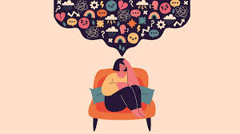
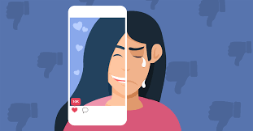

This page will talk about how soical media effects on academic performance.
Social media's impact on academic performance can be mixed, with both positive and negative aspects. Excessive use can lead to distractions and decreased study time, ultimately impacting grades. However, social media can also facilitate learning and research by providing access to information and connecting students for collaborative learning.
Constant notifications and engaging content can divert students' attention from academic tasks, leading to decreased focus and productivity.
Excessive social media use can reduce the time available for studying, homework, and other academic activities.
The allure of social media can lead students to procrastinate on their academic work.
Social media addiction can lead to feelings of loneliness, anxiety, and a fear of missing out (FOMO), which can negatively impact academic performance.
Exposure to cyberbullying or online harassment can lead to anxiety, depression, and difficulty concentrating on studies.
The vast amount of information on social media can lead to difficulty distinguishing credible sources and can expose students to misinformation.
Constant comparisons to others' seemingly perfect lives on social media can negatively impact students' self-esteem and motivation.
